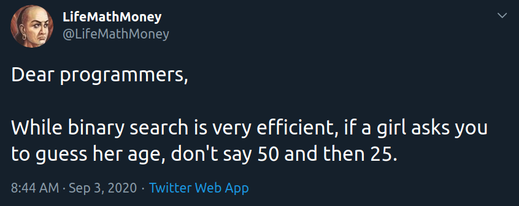

C7 Terminaison, correction, complexité ¶
"Beware of bugs in the above code; I have only proved it correct, not tried it."
(Correspondance avec van Emde Boas)
Cours¶
Attention
Ce diaporama ne vous donne que quelques points de repères lors de vos révisions. Il devrait être complété par la relecture attentive de vos propres notes de cours et par une révision approfondie des exercices.
Travaux dirigés¶
Travaux pratiques¶
Danger
En cas de difficultés sur les exercices de programmation proposés dans ce chapitre, revenir sur ceux du chapitre précédent d'introduction à OCaml.
 Exercice 1 : Compilation en OCaml¶
Exercice 1 : Compilation en OCaml¶
-
Ecrire dans
utopune fonction récursivesomme_carres : int -> intqui prend en entrée un entiernpositif et renvoie la somme des carrés des entiers de 0 àn(on calculera récursivement sans utiliser la formule donnant le résultat général). Utiliser cette fonction afin de calculer la somme des carrés entiers de 1 à 2024. -
On veut maintenant, écrire une version compilée de ce programme, recopier dans
VS Codele code de la fonctionsomme_carres. Le compilateur OCaml, estocamlopt, comme avecgcc, on peut préciser le nom de l'exécutable crée avec l'option-o.Aide
Par exemple, pour compiler le programme
hello.mlet produire l'exécutablehello.exe, on écrira simplementocamlopt hello.ml -o hello.exe.Afin que le programme compilé affiche la somme des carrés entiers de 1 à 2024, on ajoute en fin de programme
let () = print_int (somme_carres 2024); print_newline () ;;. En effet, la dernière expression ne doit être qu'un simple affichage, écrirelet () = ...permet de vérifier que l'évaluation de l'expression (un affichage) renvoie bien().
Exercice 2 : Fonctions anonymes¶
On peut définir en OCaml des fonction anonymes, à l'aide de la syntaxe fun arg1 .. argn -> expr par exemple l'expression let c = (fun n -> n*n) 10;; s'évalue à 100 car on applique la fonction (anonyme) \(n \mapsto n^2\) à 10.
-
Ecrire une fonction
entiersqui prend en argument un entiernet renvoie la liste des entiers denà1. -
En utilisant une fonction anonyme et
List.maptransformer cette liste en celle des inverses des entiers -
Calculer la somme des éléments de cette liste à l'aide d'un
List.fold
Exercice 3 : Creation et affichage¶
-
Ecrire en OCaml une fonction
aleatoirequi prend en argument un entiernet un entiervminetvmaxet renvoie une liste denvaleurs entières comprises entres 0 etvmaxAide
En OCaml la fonction
Random.intrenvoie un entier au hasard entre 0 (inclus) et la valeur entière donnée en argument (exclus). -
Ecrire en OCaml une fonction
affichequi prend en argument une liste d'entiers et l'affiche à la façon deutop. Par exempleaffiche [2; 6; 7 ]doit afficher dans le terminal[2; 6; 7 ]
Exercice 4 : Manipulations de listes¶
-
Ecrire une fonction
pair_impair : int list -> int list * int listqui prend en argument une liste d'entiers et renvoie la liste des éléments pairs et celle des éléments impairs. Par exemplepair_impair [2; 7; 5; 4; 11; 8];;renvoie([2; 4; 8], [7; 5; 11]) -
Ecrire une fonction
entrelace : 'a list -> 'a list -> 'a listqui "entrelace" les deux listes données en argument en piochant alternativement un élément dans chacune des deux listes (jusqu'à ce que l'une des deux soit vide), par exempleentrelace [1; 2; 3] [2; 6; 5];;renvoie[1; 2; 2; 6; 3; 5] -
Ecrire une fonction
compression : int list -> int listqui prend en argument une liste et renvoie cette liste dans laquelle les éléments consécutifs égaux ont été supprimés. Par exemplecompression [2; 2; 2; 1; 1; 2; 2; 2; 2]renvoie[2, 1, 2].
Exercice 5 : Tri par insertion en OCaml¶
-
Ecrire en OCaml une fonction
insertionqui prend en argument un entiernet une liste triée d'entiersentierset renvoie la liste dans laquellena été inséré à la bonne position dansentiers. Par exempleinsertion 3 [2; 7; 8 ]doit renvoyer|2; 3; 7; 8] -
En déduire une fonction
tri_insertionqui prend en argument une liste d'entiers et renvoie cette liste triée en utilisant l'algorithme du tri par insertion. -
Tester en utilisant les fonctions de l'exercice 1.
Exercice 6 : Tri par sélection en OCaml¶
-
Ecrire en OCaml une fonction
min_restequi prend en argument une listeentierset renvoie un couple composé du minimum de la listeentierset de la listeentiersprivé d'une seule occurrence du minimum. Par exemple :min_reste [6; 7; 3; 8; 10]doit renvoyer3, [6; 7; 8; 10]min_reste [2; 6; 1; 3; 1; 5]doit renvoyer1, [2; 6; 3; 1; 5]
-
En déduire une fonction
tri_selectionqui prend en argument une listeentierset renvoie cette liste triée dans l'ordre croissant en utilisant l'algorithme du tri par sélection. -
Tester en utilisant les fonctions de l'exercice 1.
Exercice 7 : Palindrome¶
En OCaml, String.sub : string -> int -> int -> sub prend en argument une chaine de caractère s et deux entiers n et m et renvoie la renvoie la portion de s commençant à l'indice n et de longueur m, par exemple String.sub "abcdef" 2 3 ;; renvoie la chaine "cde".
Ecrire une fonction est_palindrome : string -> bool qui renvoie true ssi la chaine fournie en argument est un palindrome
Exercice 8 : Code de César en OCaml¶
-
Ecrire en OCaml, une fonction
chiffre_caracterequi prend en argument un caractèrecaret une clécleet renvoiecarchiffré en utilisant le code de cesar de de cléclorsquecarest une lettre (majuscule ou minuscule), sinon on ne fait rien et on renvoiecar.Aide
Pour faire un pattern matching sur les lettres minusucles on peut écrire
| 'a'..'z' -> -
Ecrire une fonction
restequi prend en argument une chaine et renvoie cette chaine privée de son premier caractère -
Ecrire une fonction recursive
cesarqui prend en argument une chaine et une clé et permet de chiffrer (ou de déchiffrer) cette chaine avec le code de César -
La fonction
String.mappermet d'appliquer une fonction à chaque caractère d'une chaine à la façon deList.map. Proposer une version du chiffrement de César utilisantString.map
Exercice 9 : Tri fusion en OCaml¶
-
Ecrire une fonction
separeen OCaml qui prend en argument une listelet renvoie deux listes contenant chacune la moitié (à une unité près) des éléments delAide
On pourra utiliser un pattern matching sur le motif
h1::h2::tet mettreh1dans la première liste eth2dans la seconde -
Ecrire une fonction
fusionqui prend en argument deux listes déjà triées et renvoie la fusion de ces deux listes. -
Ecrire le
tri_fusionen OCaml à l'aide de ces deux listes -
Le tri rapide est similaire au tri fusion mais pour séparer les deux listes, on utilise un pivot choisit au hasard dans la liste et on sépare ensuite la liste entre les éléments inférieurs au pivot et les éléments supérieur au pivot. Implémenter en OCaml ce nouvel algorithme de tri
-
Quel est la complexité de ce nouvel algorithme dans le pire des cas ?
-
Effectuer des mesures de temps de calcul pour ce nouvel algorithme. Commenter
Exercice 10 : ASCII art et compression¶
L'ASCII art consite à réaliser des images uniquement avec des lettres et ces caractères spéciaux contenus dans le code ascii. Voici l'exemple d'un smiley réalisé en ASCII art (crédit : Wikipédia):
oooo$$$$$$$$$$$$oooo
oo$$$$$$$$$$$$$$$$$$$$$$$$o
oo$$$$$$$$$$$$$$$$$$$$$$$$$$$$$$o o$ $$ o$
o $ oo o$$$$$$$$$$$$$$$$$$$$$$$$$$$$$$$$$$$$o $$ $$ $$o$
oo $ $ '$ o$$$$$$$$$ $$$$$$$$$$$$$ $$$$$$$$$o $$$o$$o$
'$$$$$$o$ o$$$$$$$$$ $$$$$$$$$$$ $$$$$$$$$$o $$$$$$$$
$$$$$$$ $$$$$$$$$$$ $$$$$$$$$$$ $$$$$$$$$$$$$$$$$$$$$$$
$$$$$$$$$$$$$$$$$$$$$$$ $$$$$$$$$$$$$ $$$$$$$$$$$$$$ '''$$$
'$$$''''$$$$$$$$$$$$$$$$$$$$$$$$$$$$$$$$$$$$$$$$$$$$$$$$$ '$$$
$$$ o$$$$$$$$$$$$$$$$$$$$$$$$$$$$$$$$$$$$$$$$$$$$$$$$$$ '$$$o
o$$' $$$$$$$$$$$$$$$$$$$$$$$$$$$$$$$$$$$$$$$$$$$$$$$$$$$ $$$o
$$$ $$$$$$$$$$$$$$$$$$$$$$$$$$$$$$$$$$$$$$$$$$$$$' '$$$$$$ooooo$$$$o
o$$$oooo$$$$$ $$$$$$$$$$$$$$$$$$$$$$$$$$$$$$$$$$$$$ o$$$$$$$$$$$$$$$$$
$$$$$$$$'$$$$ $$$$$$$$$$$$$$$$$$$$$$$$$$$$$$$$$$ $$$$''''''''
'''' $$$$ '$$$$$$$$$$$$$$$$$$$$$$$$$$$$' o$$$
'$$$o '''$$$$$$$$$$$$$$$$$$'$$' $$$
$$$o '$$''$$$$$$'''' o$$$
$$$$o o$$$'
'$$$$o o$$$$$$o'$$$$o o$$$$
'$$$$$oo ''$$$$o$$$$$o o$$$$''
''$$$$$oooo '$$$o$$$$$$$$$'''
''$$$$$$$oo $$$$$$$$$$
''''$$$$$$$$$$$
$$$$$$$$$$$$
$$$$$$$$$$'
'$$$''
Comme on peut le constater sur cet exemple, on trouve dans ce type d'image, de nombreuses répétitions du même caractère, (ici des suites de $ ou de "). Aussi, on cherche à diminuer la taille de ces images en utilisant une compression de type RLE qui consiste à remplacer des occurrences multiples d'un caractère par le nombre de répétition suivi du caractère, par exemple la chaine "AAAAABBBBCC" pourrait se compresser en "5A4B2C".
-
Afin de travailler sur ces images en OCaml, on propose dans un premier temps de les convertir en liste de caractères. Ecrire une fonction
list_of_string : string -> char listqui prend en entrée une chaine de caractère et la convertit en une liste de caractère. Par exemplelist_of_string "XXXYY"donne la liste['X','X','X','Y','Y'].Aide
On pourra dans un premier temps ne pas soulever des problèmes de complexité et utiliser
String.submais l'extraction d'une sous chaine est une opération en \(\mathcal{O}(m)\) où \(m\) est la taille de la sous chaine, aussi répéter l'extraction des sous chaines pour chaque emplacement donnera une complexité quadratique. Une solution de complexité linéaire peut s'obtenir en utilisant une fonction auxiliaire qui extrait entre deux indices. -
Ecrire une fonction
compressionqui prend en entrée une liste de caractère et renvoie une liste de couples (un entier et un caractère) correspondant à la compression RLE décrite ci-dessus par exemplecompression ['E';'E';'E';'C';'A';'A';'A';'A']renvoie la liste[(3,'E'),(1,'C'),(4,'A')] -
Compresser l'image du smiley ci-dessus, combien de couples
int*charcontient la liste obtenue ? Vérifier votre résultat :
-
Ecrire la fonction
décompression : int*char -> stringqui prend en entrée une liste de couples représentant une compression RLE d'une image en ASCII art et renvoie la chaine représentant cette image. -
Tester votre fonction en décompressant l'image représenté par la liste suivante :
Que peut-on lire sur cette image (respecter la casse) :[(13,'_'); (1,'\n'); (1,'('); (1,' '); (1,'H'); (1,'e'); (2,'l'); (1,'o'); (1,' '); (1,'w'); (1,'o'); (1,'r'); (1,'l'); (1,'d'); (1,' '); (1,')'); (1,'\n'); (1,' '); (13,'-'); (1,'\n'); (8,' '); (1,'o'); (3,' '); (1,'^'); (2,'_'); (1,'^'); (1,'\n'); (9,' '); (1,'o'); (2,' '); (1,'('); (2,'o'); (1,')'); (1,'\\'); (7,'_'); (1,'\n'); (12,' '); (1,'('); (2,'_'); (1,')'); (7,' '); (1,')'); (1,'\\'); (1,'/'); (1,'\\'); (1,'\n'); (16,' '); (2,'|'); (4,'-'); (1,'w'); (1,' '); (1,'|'); (1,'\n'); (16,' '); (2,'|'); (5,' '); (2,'|'); ]
Humour d'informaticien¶
